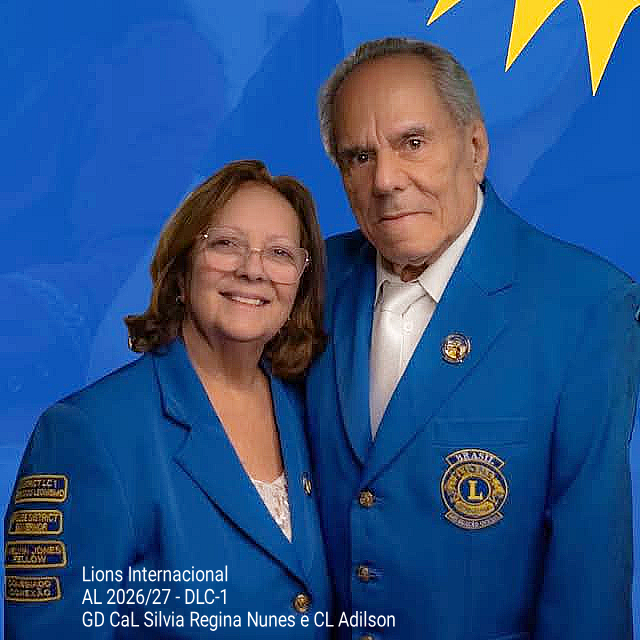

Nós ServimosServir com Equidade
O Distrito LC-1 é uma rede de voluntários que faz o bem sem olhar a quem. Reunimos mais de uma centena de clubes no Estado do Rio de Janeiro em torno de um único propósito: transformar vidas por meio do serviço humanitário.

Encontre um clube
Lista completa dos Lions Clubes, Leo Clubes e Clubes de Castores do Distrito.
Doe com segurança
100% das doações públicas vão para as ações de serviço. Veja como isso é garantido.
Formação de líderes
Cursos gratuitos de desenvolvimento da liderança para todos os países de língua portuguesa.
Subsídios da LCIF
Como o seu clube pode acessar recursos internacionais para projetos humanitários.
A corrente do bem em movimento
Cada publicação aqui é uma ação real, com nome, rosto e comunidade. Filtre por tema para acompanhar o que mais importa para você.
O braço institucional que dá escala ao nosso serviço
A FAF gerencia recursos e patrimônio com rigor e transparência, sob auditoria permanente do Ministério Público do Estado do Rio de Janeiro, e coloca sua infraestrutura — inclusive a unidade móvel — à disposição de todos os clubes do Distrito.
Oito frentes, um único lema
O Lions Clubs International direciona sua força de serviço voluntário mundial através de oito causas globais, mobilizando milhões de pessoas para enfrentar os desafios mais críticos da humanidade.
Em tempos onde a sociedade é bombardeada por uma correria de notícias negativas que muitas vezes dão maus exemplos, nossas páginas servirão como um farol para aqueles que ainda têm esperança na humanidade.
MJF CL Izidoro Flumignan — Editorial do portalQuem caminha ao nosso lado
Existe, sim, gente que se interessa pelo outro sem pensar em si
Ser Leão é carregar um selo de caráter, liderança e compromisso inabalável com o próximo. Converse com o Distrito e descubra o clube mais próximo de você.